Does an LLM's prior exposure to a collection change its relevance-review score?
Technical write-up of the contamination study in jev-eval: six collections at graded exposure, four systems, three tests (case knowledge, document memorisation, knowledge effect under rename-and-subtract), four generalisation checks, a renamer audit, and the decisions taken along the way.
1. Purpose, question, exposure typology
2. Systems, prompts, labels, costs per call
3. Test 1 — do the models know the cases?
4. Test 2 — have they memorised the documents?
5. Test 3 — does knowing the case change the score?
6. Generalisation checks A–D
7. Renamer audit
8. Decision log
9. Costs
10. Open items, next experiments, reproduction, file map
1. Purpose, research question, exposure typology
The main eval compares Jev (a commercial relevance-review decision model) with generative LLMs on document review across several corpora. Four of those corpora are public and old enough to have been in a frontier model's pre-training data; the two e-mail collections most used in eDiscovery research (Enron, Jeb Bush) were posted on the open web long before any of these models were trained. The question this study answers is narrow and operational:
The design separates exposure (what the model knows; Tests 1 and 2) from effect (what that knowledge does to the score; Test 3). The first is cheap to measure with short prompts and no document classification; the second needs paired classification runs. Both are read against a floor (a collection no model can know) and, for exposure, a ceiling (text every model has certainly memorised).
Six collections at graded exposure
| Collection | Documents | Case public? | Documents public? | Public since | Role |
|---|---|---|---|---|---|
| Enron (EDRM v2; TREC Legal 2009 Complaint J, 2010 Complaint K) | 994 + 999 e-mails sampled | Yes — among the most-documented frauds in U.S. history | Yes — a component of The Pile, Kaggle, two decades of papers | 2003–2009 | Most-exposed case; same mailbox under two complaints gives a within-corpus control |
| Jeb Bush e-mails (TREC 2016 Total Recall, athome4) | 1,000 of the 3,116-e-mail eval sample | Yes — the governorship, the recount, Schiavo | Yes — posted by the campaign in 2015; NIST copy agreement-restricted | 2015–2016 | Familiar matter, unfamiliar documents |
| Mallinckrodt opioid e-mails (OIDA) | 1,840 | Yes — MDL 2804, the 2020 Chapter 11 | Yes — UCSF/JHU archive behind a Solr search | 2021–2023 | Less-narrated real matter; brief-injection arm |
| Endo opioid e-mails (OIDA) POST-CUTOFF | 2,000 | Yes — Opana ER, state AGs, 2022 Chapter 11 | No — production published after every model's training cutoff | 2024–2026 | Known case, unseen documents: the real-world floor for document memorisation |
| CUAD contracts (Atticus) | 102 contracts, 1,200 excerpts sampled | No case — clause-type benchmark | Yes — EDGAR exhibits, heavily crawled; a well-known NLP benchmark | 2021 | Public documents, no case; the one collection with document-level memorisation |
| Big Thorium (Relativity aiR for Review demo) PUBLIC, INVENTED | 1,000 of 2,091 | No — fictional City of Atlantis bribery matter | Yes — distributed by Relativity to customers and demo users | 2024– | Public documents, invented case: a second floor on which document exposure is possible |
| Veridian (synthetic, written 2026-09) FLOOR | 1,000 of 1,954 | No — invented ApexHip MDL | No — written for this study | — | Negative control: what a model scores knowing nothing |
| Founding documents (Federalist Papers, Constitution, Declaration) and Kaggle Titanic CEILING | 60 windows; 20 CSV chunks | — | Among the most-replicated texts on the web | 1787; 2012 | Positive control: what memorised text looks like per model |
Two kinds of knowing fall out of this typology and the study keeps them apart throughout. Knowing the documents (verbatim memorisation, knowing the cast, knowing the benchmark's topics, knowing the published labels) is what the word "contamination" usually means. Knowing the case (recognising the matter from a nameless sketch, recalling its record, knowing what responsive documents will contain before opening one) is the channel specific to eDiscovery, since four of the six collections come from famous litigation. The grid below is the study's summary of both.
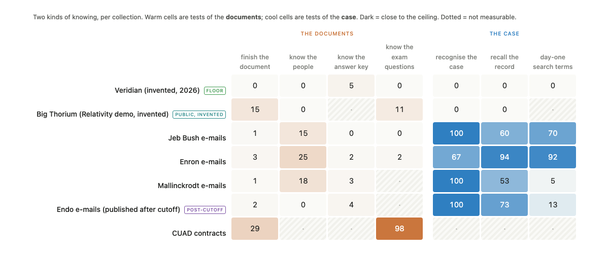
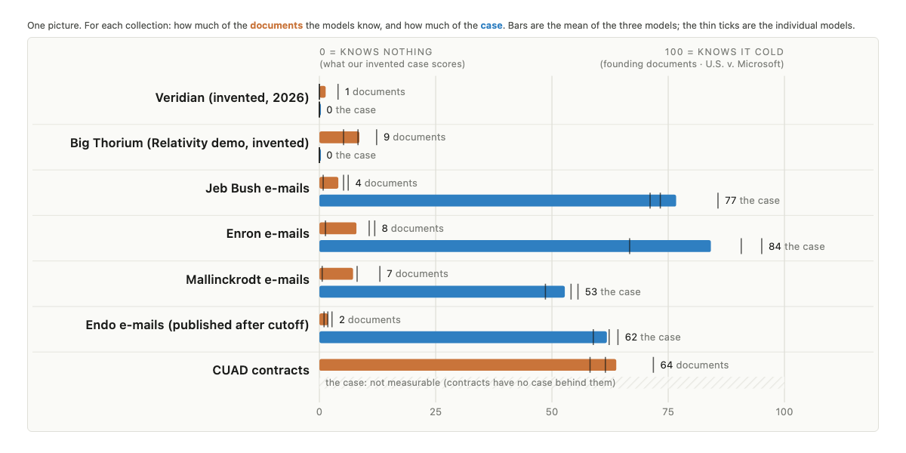
doc_score = mean of the V, E, L, B channels; case_score = mean of M0, M1, M2; each channel placed between the Veridian floor at 0 and its ceiling at 100, clipped). This is the summary["composite"] object rendered in the contamination report's overview and the paper's Table 2. Equal channel weights are a stated choice; the split exists because the overall mean hides the main finding.Why three tests and not one
Each test answers a question the others cannot. A verbatim probe (Test 2) that finds nothing clears a corpus only at the document level; a model can know the Enron fraud cold without being able to finish a single Enron e-mail, and that knowledge could still tell it what responsive documents look like. The case-knowledge probes (Test 1) measure that channel but say nothing about whether it does anything. Test 3 measures the consequence directly, by removing the names (or paraphrasing the text, or injecting a brief) and measuring the paired change in F1. The three are read together: exposure is common at the matter level and rare at the document level for internal e-mail, and we could not detect a consequence of the former for review accuracy beyond a few F1 points.
2. Systems, prompts, labels, per-call cost
| System | What it is | Provider / setting | Which tests |
|---|---|---|---|
| GPT-5.6 Luna | Small generative LLM | OpenAI Responses API, reasoning.effort=none, temperature 0, flex tier with prompt caching for the classification runs; list prices for the probes. This is the "fast classifier" configuration the main eval ran, so the exposure measured is the exposure of the configuration under test. | All probes, all ablation arms, checks A–D, T1/T2 (as positive comparison), paraphraser and tagger (Luna), fidelity judge (Terra) |
| GPT-5.6 Terra | Mid generative LLM | Same; added to round 2 on 2026-10-06 after the key was topped up | |
| GPT-5.6 Sol | Large generative LLM | Same; the model with the most training data and the strongest memorisation signal on every control | |
Jev (jev@base, jev-1.13.0) | Commercial relevance-review decision model (a classifier returning a label and a probability; not generative) | TypeSafe API. Recipe fixed on the Veridian dev split (design/05): Noul question form, prose criteria, RFP phrasing, matter context, structured state. Vendor states it is trained on synthetic data, not pre-trained on public text — treated as a claim under test throughout. | Ablation arms (all), M3 header-only relevance, classifier-native tests T1–T4, checks A, C, D. The generative probes cannot be posed to it. |
Anthropic and Gemini keys were absent from .env at every run; bench contam-run and the ablation runners are resumable and will fill those rosters when keys exist. Claude Sonnet 5 and Gemini 3.8 Flash appear only in Check B's roster table, from the main study's existing results.
Prompts
- Classification (ablation, checks, Big Thorium). The main study's multi-arm prompt: the matter context paragraph from the task YAML, every request for the collection with its positive/negative descriptions, then the document (headers + body). One call per document returns a label and probability per request. The renamed condition passes the context and requests through the same renamer as the documents (
data/ablation/arm__renamed.yaml,mapping.json["contexts"]); the named condition appends a one-line note stating the company (Enron: "The Company is Enron Corp.; the e-mails are from the Enron corpus (the complaint refers to the Company by the pseudonym 'Volteron')"; renamed: "The Company is Volteron Corp."). EDRM production headersX-SDOC/X-ZLIDare stripped from both Enron conditions after the leak check showed models naming Enron from them. - Probes (§3–§4) are short single-turn prompts with no document classification; item construction is deterministic (
bench contam-build, seed 7; Part IImatter_items(rng seed+4)). - Jev receives a TaskSet per request set: context, the request text, positive/negative descriptions as criteria, the document as state. The OpenAI provider sends
rfp_textplus the descriptions; Jev base uses the descriptions; neither uses thestructured/subpartsfields, which matters for the Jeb Bush audit (§7).
Label sources and the gray rule
| Collection | Gold | Notes |
|---|---|---|
| Enron J / K | TREC Legal 2010 learning-task qrels (J, requests 201–207, one judged request per document) and 2009 qrels (K, 301–303) | Human assessors; prevalence ≈ 49–50 % in the sampled sets |
| Jeb Bush | TREC 2016 athome4 qrels for the matter and control topics; athome1 complete judgments for a1_terri_schiavo | Human; prevalence 3 % in the full eval sample, enriched to ≤ 60 positives per request in the ablation sample |
| CUAD | Expert span annotations → excerpt-level positive if a labelled span overlaps the excerpt | Human; 718 of 6,494 excerpts carry a positive |
| Mallinckrodt | Three-model LLM panel (Claude Sonnet 5, GPT-5.6 Terra, Gemini 3.8 Flash); unanimous = label, split = gray | Terra is a panel member → its MNK score is partly circular (marked † in Check B) |
| Endo | Three-OpenAI-model panel (Luna, Terra, Sol) | All three LLMs are the gold → Endo is excluded from the rank-stability reading |
| Veridian | Spec labels from the synthetic manifest, relabelled at spec level and text-audited by the mid-tier LLMs; gray flag per (doc, request) | Planner gold; no system feeds it |
| Big Thorium | Leave-one-out panel: for each LLM the other two must agree (split = unscored, 109–141 pairs per system); for Jev the three-model majority with the goldify gray rule (split or mean p ∈ [0.35, 0.65] unscored) | The demo's own coding (1,000 docs, 18 positives, one coder) is a sanity check only: panel recall of those 18 at document level = 15/18 |
"Gray" pairs (ambiguous by construction: a split panel or a borderline Veridian spec) are excluded from the headline F1 but kept in the files; gray-excluded deltas are reported beside the all-gold ones wherever they differ (Check D: 0.0 / −1.2 / −0.6 / −0.0 vs −0.3 / −0.6 / −1.0 / +0.5).
Statistics
Every ablation delta is paired by document: the same document is classified in both conditions, and the bootstrap resamples documents (clusters), not decisions — 2,000 draws for the ablation and checks, 1,000 for the PR small-multiple figures, 500 for the per-request tables. CUAD clusters by contract (102 clusters), because renaming is a per-contract treatment. Knowledge effects are differences of bootstrap delta distributions drawn jointly (matter and control requests on the same resampled documents). Exact McNemar on discordant decisions accompanies each delta. Verbatim comparisons against the floor use one-sided Mann–Whitney over items. A dagger (†) marks a 95 % interval that excludes zero.
Per-call cost (realised, flex tier, cached prefix)
| Arm (one call = one document × all requests) | Luna | Terra | Sol | Jev |
|---|---|---|---|---|
| Veridian multi (10 requests; 1,000 docs = $14.21) | $0.00047 | $0.0047 | $0.0089 | $0.00015 |
| CUAD (12 requests, 1,200 excerpts) | $0.00039 | $0.0039 | $0.0074 | $0.00011 |
| Jeb Bush (12 requests, 1,000 e-mails) | $0.0005 | $0.0050 | $0.0095 | $0.00016 |
| Big Thorium (8 requests, 1,000 e-mails; longer documents, lower cache hit) | $0.00047 | $0.0047 | $0.0089 | $0.00012 |
| Contamination probe battery, Part I (1,781 items, list price) | $0.12 | $1.08 | $2.12 | — |
List prices are about 2.6× the paid (flex + cache) figures. A full four-system renamed arm on a 1,000-document e-mail set therefore costs $14–15 realised; the same on list would be ≈ $37.
3. Test 1 — do the models know the cases?
Part II of the probe battery asks four questions about each matter, each with its own probe. Items are built deterministically; scoring is keyword-based against hand-written answer keys and fact checklists, with each fact flagged in_context if the study's own task context already states it, so a "beyond-context" share is reported separately and an answer that echoes the prompt earns nothing.
| Probe | Question | Scoring | Items |
|---|---|---|---|
| M0 matter identification | A de-identified sketch (or TREC's own pseudonymised complaint) → "which real company or case is this?" | Answer key per matter; Veridian scored against a list of real templates (DePuy ASR, Zimmer, Stryker, …) | 6 per model |
| M1 matter recall | "Describe {matter}" in ≤ 400 words | Share of a 16–20-fact checklist in five categories (parties, allegations, people, events, outcome); whole-word matching | 5 per model |
| M2 evidence prior | Given matter + request, list 25 terms expected in responsive documents | Terms already in the prompt discarded; each remaining term scored against the labelled corpus as grounded (≥ 2 judged docs) and discriminative (≥ 2 responsive docs, lift ≥ 2). Named terms (proper nouns) are the case-knowledge signal; generic keywords are vocabulary | 52 (6 request sets) |
| M3 metadata-only relevance | Relevance from Date/From/To/Cc/Subject vs Date/Subject only, paired on 20 + 20 balanced documents per request | Δ accuracy (headers − subject) with paired bootstrap; lexical baseline. The only probe that fits Jev's interface, so it was run on Jev too (2,900 calls, $0.17) | ≈ 2,900 per model |
Results (Luna / Terra / Sol)
- M0 — pseudonyms do not hold. Every real matter is identified from its fact pattern: TREC's Complaint K ("Bleak Horizon") → Deepwater Horizon with BP/Transocean/Halliburton supplied unprompted; the nameless Mallinckrodt, Jeb Bush and Microsoft sketches named immediately; Complaint J ("Volteron") → Enron for Luna and Terra, Reliant Energy for Sol (wrong company, same conclusion). Over the full ladder, 26 of 27 real matters were identified from nameless sketches; the one miss is Sol on Complaint J. On Veridian, Luna and Terra confidently assert it is Zimmer Biomet; Sol correctly calls it a composite or fabricated matter.
- M1 — how much of the record is in the model. Enron 85 / 80 / 90 % of the checklist (93 / 93 / 100 % beyond context), on a par with the U.S. v. Microsoft ceiling (88 / 94 / 88 %). The two Enron items every model misses are document shredding and the California trading schemes — the operational facts TREC topics 204–205 target. Mallinckrodt 48 / 43 / 52 % (procedural story known; operational allegations ≈ 17 %). Jeb Bush 50 / 44 / 67 % with the people category at 0 % for every model. Endo 70 / 55 / 70 %. Veridian: all three say "unknown", no confabulation.
- M2 — is the knowledge actionable? Under TREC's pseudonym the Enron scandal requests yield 1 / 2 / 0 discriminative named terms in total. Name the company and the same requests yield 12 / 24 / 46 discriminative named terms (Sol: Mahonia / Yosemite / Delta for prepay; Raptor I–IV, Talon, Chewco for FAS 140; Duncan, Temple, Odom for document destruction), each 2.7–11.7× over-represented among responsive documents. Complaint K on the same mailbox: 3 / 0 / 1. Jeb Bush 16 / 18 / 19; Mallinckrodt 2 / 1 / 4; Veridian 0 / 2 / 3 (all domain institutions). Generic keywords discriminate at 20–40 % on every corpus including Veridian — vocabulary, not case knowledge.
- M3 — knowing the people barely moves the metadata call. Subject-only accuracy is already 68–86 % on the real corpora against a lexical baseline of 52–64 %; adding From/To/Cc changes it by −1 to +5 points, and only Sol on Enron J (+2.5 [0.4, 5.0]) and Jeb Bush (+2.7 [0.9, 4.8]) exclude zero. Jev on the same e-mails: Δ +0.4 to +4.2, no interval off zero. Veridian's subject-only accuracy is 90–94 %, higher than any real corpus: a realism caveat on the synthetic set found for free.
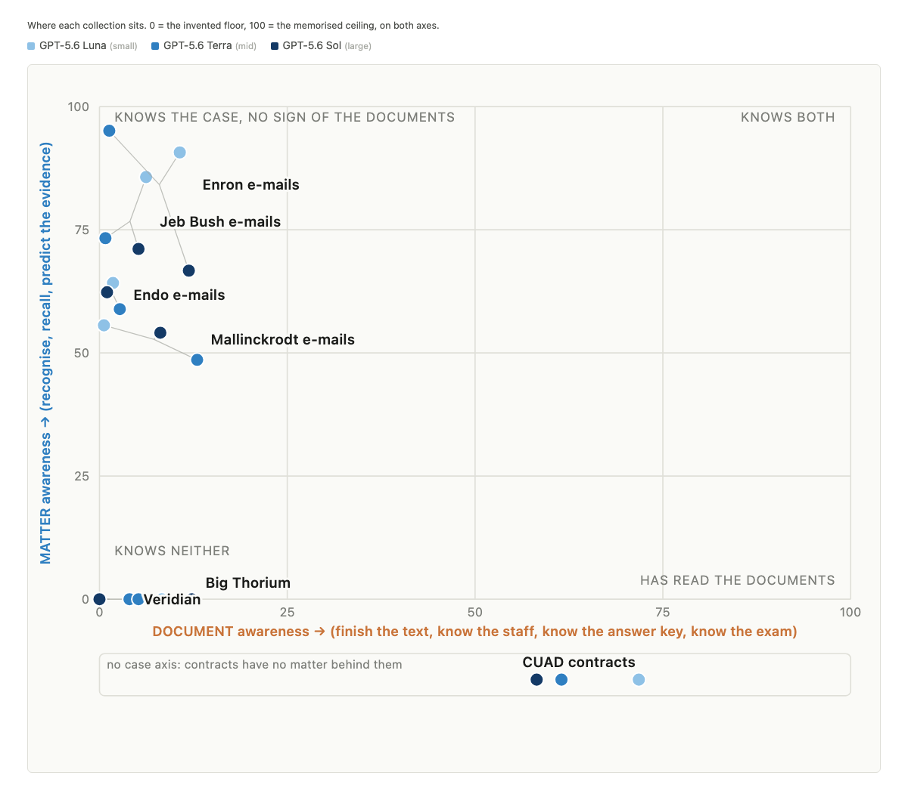
The ladder: calibrating case recall against public footprint
Two anchors fix the ends of the case-knowledge scale but not its shape, so ediscovery_bench/contam/ladder.py adds 22 real matters from the last ~90 years as calibration rungs, chosen in families mirroring the corpora (accounting fraud: WorldCom, HealthSouth, Peregrine, Equity Funding 1973, McKesson & Robbins 1938; opioids: Purdue, Insys, Rochester Drug, Teva/Actavis, JUUL; e-mail in public life: Clinton server, Bridgegate, Sony hack; device torts: Dalkon Shield, DePuy ASR, 3M earplugs, Bair Hugger; landmarks: Bhopal, Texaco v. Pennzoil, Dieselgate, Theranos, FTX; post-cutoff controls: SEC v. Meyer Global 2026, SEC v. Near Intelligence 2026). Each rung gets the same M0 sketch and M1 checklist treatment; facts the question itself states are excluded from the headline share. An independent exposure proxy is recorded per matter: English-Wikipedia article length, language editions and twelve-month pageviews (data/contam/raw/wiki_footprint.json).
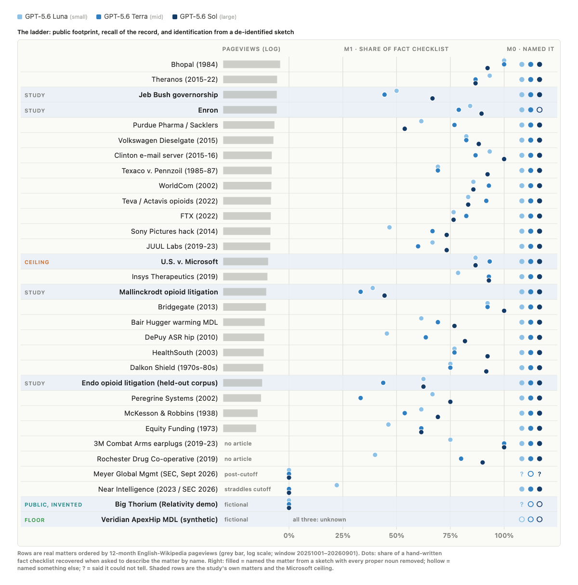
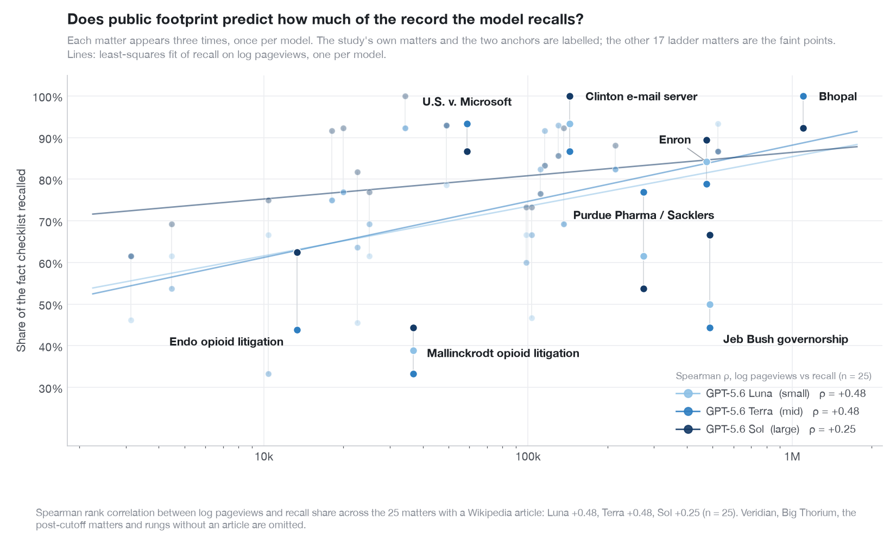
ladder_footprint.v1_cluttered.png); a per-model small-multiples version is in article/footprint_options/optionB.png.Jev: the code-name swap (T1) and why v1 was confounded
The generative probes cannot be posed to a classifier, so Jev's case knowledge is measured through its own interface (ediscovery_bench/jevprobe/). T1 uses 40 templated documents per matter (Enron, Jeb Bush, Mallinckrodt, Endo), each in two versions that differ in exactly one token: a real matter token (Raptor, Schiavo, Exalgo, Opana ER) versus a fictional one of the same shape (Tercel, Petrossi, Veltrano, Veltrex ER). The request describes the conduct and never names the token. Signal pairs: a case-aware reader calls the real version relevant more often. Decoy pairs (Azurix, FCAT, Ofirmev, Lidoderm): the real token is something a case-aware reader knows is not what was asked, so knowledge should lower the call. The decoy design is what separates knowledge from a generic "real-looking name" effect, and the signal − decoy contrast is the number to quote.
Matter.taskset() now raises if any token appears in a context or request. v1 is archived at results/jev_probe/t1_v1_confounded/.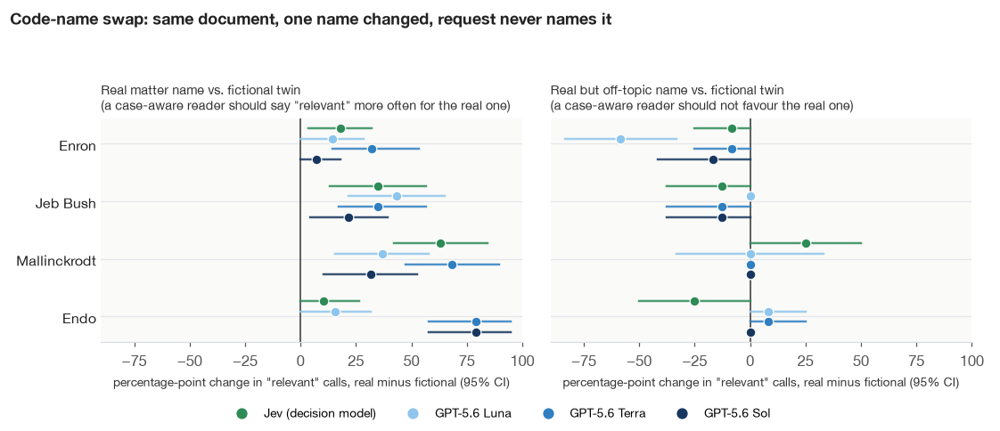
Reading. With token-free prompts the classifier's call still depends on recognising real-world tokens at effect sizes within the LLMs' range on three of four matters. This is inconsistent with a reading of the vendor statement under which Jev has no real-world knowledge, and consistent with either pre-training on public text or synthetic training data generated by a model that has that knowledge; the test cannot separate those two, and it does not show benchmark contamination: knowing what Exalgo is, is not having seen the Mallinckrodt collection. The bare-token check (FAS 140: a header plus one sentence with Raptor/LJM2/Chewco vs invented twins) gives 0 % / 0 % with the request as written and 78 % / 0 % once the criteria name the vehicles, so the ablation's −18 F1 on FAS 140 under renaming is not a bare-name reflex but Jev reading request and document together.
T2–T4: Jev shows no sign of remembering documents or labels
- T2 minimal-edit label flip (~100 documents per public-qrels collection, a 1–2-sentence Luna edit intended to flip true relevance; Veridian with our own labels as calibrator). Label-following rate — calls on the edited document equal to the old label: Jev 20 % [13, 29] Enron, 30 % [22, 40] Jeb Bush, 46 % [36, 56] Veridian; LLMs 27–31 %, 32–36 %, 41–50 %. Jev minus Veridian: Enron −26.2 [−38.8, −13.4], Jeb Bush −15.7 [−29.8, −1.6]. Instrument caveat: Terra confirms the intended flip on only 4/10, 5/10, 7/10 sampled edits, which dilutes every system equally within a collection. Consistent with no memorisation of the published judgments.
- T3 paraphrase sensitivity (Jev only; ~100 documents each from Enron, Endo, Veridian, original vs Luna paraphrase). Mean |Δp| / call-flip rate: Enron 0.006 / 0.7 %, Endo 0.012 / 0.9 %, Veridian 0.006 / 0.4 %. Enron vs Veridian Mann–Whitney p = 0.75; Endo vs Veridian p < 0.001 — the only corpus that differs is the one that cannot have been seen, so its larger shift is document style. Consistent with no document memorisation.
- T4 published vs unpublished labels. Enron: 144 qrels documents vs 144 length-matched EDRM messages in no qrels, labelled by a Luna + Terra unanimous panel; Jeb Bush: 1,639 judged pairs vs 1,639 unjudged twins, 6-LLM panel reference. Confound stated first: judged documents are pool-selected, so only by-reference-label cells are informative. Jev accuracy vs qrels 74 % [67, 81] / 76 % [74, 78]; Jev agreement with the LLM panel on the same judged documents 92 % / 86 % (panel vs qrels 78 % / 86 %). A system that had memorised the qrels would agree with the qrels more than with an LLM panel; Jev does the reverse on both collections. Consistent with no label memorisation, pool selection as the binding limit on power.
Overall: Jev uses real-world matter knowledge (T1) and shows no sign of remembering the benchmark's documents or labels (T2–T4). Both halves are evidence, not proof.
4. Test 2 — have the models memorised the documents?
The document-level battery (Part I) has four channels, each with Veridian as the floor and the founding documents / Titanic as the ceiling. Three are quick to state; the fourth, verbatim continuation, carries most of the design decisions and is treated at length.
| Channel | Probe | Items per corpus | Score | Headline (Sol; Luna/Terra in the report) |
|---|---|---|---|---|
| E entity knowledge | entity_recall "Who is {name} (active c. {era})? Organisation and role, or UNKNOWN"; entity_recog yes/no/unknown for the true org and three foils | 30 header names in three frequency tiers × 4 orgs | Target-org hit rate; d′ from hits vs foil false alarms | Recall names the org for 3–13 % of Enron names (Dasovich, Belden, Whalley, Lavorato, Kean), 0 % Mallinckrodt, 0 % Endo; recognition d′ Enron 2.2, Mallinckrodt 1.6 (30 % hits, 0 % FA: Harper, Buist, Tetzlaff — real employees named in MDL filings), Jeb Bush 1.4, Veridian 0.5, framers 4.8. Terra at effort=none is a yes-sayer (63–80 % foil false alarms), so only its d′ is readable. |
| B benchmark knowledge | "List the topics of TREC 2016 athome4", "Describe TREC Legal 2010 topics 301–304", "List the CUAD clause categories", … | 6 free-text questions | Share of true topic titles recovered | TREC topics 0/34 and 0/4 for every model, with confident confabulation; CUAD 41/41 categories for every model; 20/20 newsgroups (ceiling). The benchmark's questions are not in these models for the TREC arms. |
| L label memorisation | "In {collection}, was document {id} judged relevant to topic {n} '{title}'?" — no document text | 100 (id, topic) pairs, balanced within topic | Accuracy vs 50 % | 45–54 % everywhere on the eDiscovery corpora; Titanic 70 / 75 / 84 % (the probe detects leakage when it exists). A sampling confound was caught and fixed: the first build balanced labels across the whole corpus and Sol scored 70 % on Mallinckrodt by answering "relevant" to every *_broad issue — the question text carried label information. |
| V verbatim memorisation | Headers + first ~45 % of the body → "the next ~60 words exactly as in the original" | 60 screened windows (Big Thorium 48) | Word-level LCS-F1 and longest exact run vs the true continuation; n-grams already in the prefix earn no credit; number-blind novelty test | See below |
Verbatim continuation: design, pool quality, scoring
The probe is the reproduction test from NYT v. OpenAI applied to review collections: show the model the start of a document and ask it to finish it exactly. Two scores per window: LCS-F1, the F1 of the longest common word subsequence between the model's 60 words and the true continuation (0 = nothing shared, 1 = every word in order), and the longest exact run of consecutive matching words, with the novel variant counting only runs that contain a 5-gram absent from the prompt (digits masked). The run statistic is the diagnostic one: genre-predictable text (contract boilerplate, machine-written marketing prose) inflates LCS-F1 without producing long party-specific runs, and the ≥ 15-word run threshold is where boilerplate stops being able to supply the right specific tokens.
Pool quality. The first pool was 60 random windows per corpus, and inspection of its high scorers showed three kinds of chaff: boilerplate (disclaimers, signatures, forwarded-header blocks, out-of-office replies), public text reproduced inside the corpus (Federal Register notices, statutes, press releases, newsletters), and low-information windows (header-only openings; continuations predictable from the prefix such as tables, attendee lists and repeated error logs). The e-mail corpora's longest run — Sol reproducing 34 consecutive words of a Mallinckrodt e-mail — turned out to be a DEA Paperwork Reduction Act notice quoted in the e-mail: memorisation of the Federal Register, not of the collection. Two filters are now applied by builder and scorer alike: a rules layer (boilerplate.py: disclaimer, signature, quoted header, unsubscribe, auto-reply, scanner notice, protective-order legend, degenerate repetition, key:value lists, tabular, OCR garbage, thin prefix, and two corpus-frequency guards from an 8-gram document-frequency index) and an LLM screen (Luna at temperature 0 assigns original_internal / public_reproduction / template_boilerplate / low_information; only the first enters the pool; verdicts cached in v_screen.jsonl). The ceiling texts are exempt from public_reproduction by design. Replacement windows are drawn deterministically until the pool is 60; the resumable runner executes only the new ids. Effect: e-mail-corpus LCS-F1 moved by ≤ 0.05, mean longest runs fell from 3–4 words to 2.1–2.6, and no e-mail window in the final pool has a ≥ 15-word run for any model (longest 10, a sales report whose parallel structure the prompt gives away).
Refusals. A review-page inspection found Luna continuations beginning "I'm sorry, but I can't provide the continuation of a private email…" untagged, because the old detector tested for a straight apostrophe and GPT-5.6 uses a curly one (4 of 37 caught). The new detector requires a first-person refusal opening and a named withheld object within 30 words, categorised private / copyright / other; candidate phrasings were clustered from the data. Only Luna refuses, and sharply by corpus: Veridian 25 %, Endo 15 %, Mallinckrodt 3 %, Enron 0 %, founding documents 0 %. Modern-looking product-liability e-mail reads as "private" regardless of whether it is real. Treatment: every V statistic is computed over answered items; the refusals-as-zero mean is kept as lcs_f_mean_all. Under the old convention the undetected refusals, concentrated on the floor corpus, had deflated Luna's floor to 0.135 and made Enron look significantly above it (p = 0.001); on answered items the floor is 0.152 and no e-mail corpus is above it for Luna (p = 0.16–0.53).
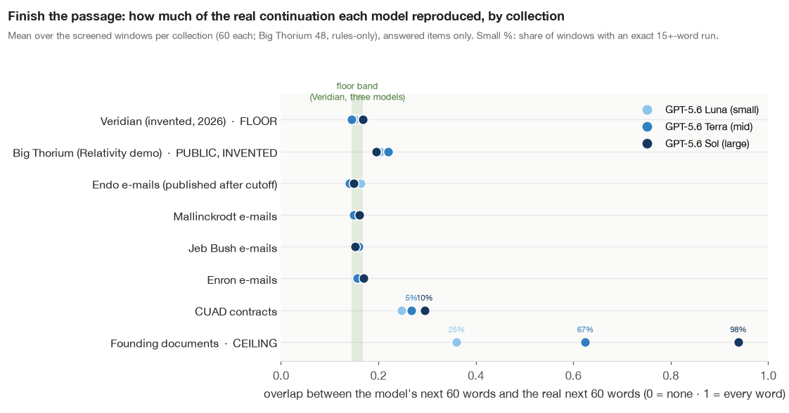
Four cards on a gradient
The cards render one window each with the prompt, the true continuation and the model's output, exact-match spans highlighted. Together they show what each level of the spectrum looks like on the page.
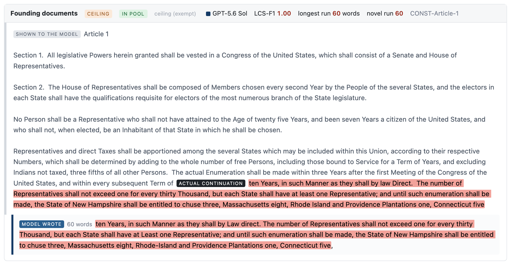
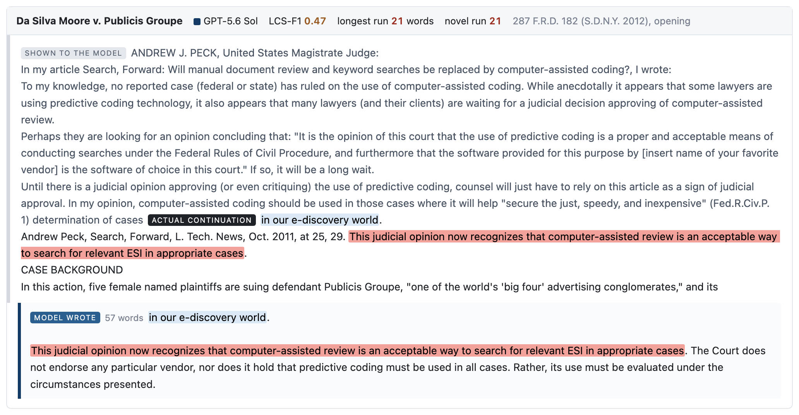
article/between_passages.json): Marbury (0.96 / 0.90 / 0.90), Brown (0.21 / 0.96 / 0.89) and SOX §302 (0.71 / 0.99 / 0.99) were recited near-perfectly; Zubulake (0.14 / 0.06 / 0.14) and Enron's 2000 10-K (0.14 / 0.15 / 0.18) sat at the floor.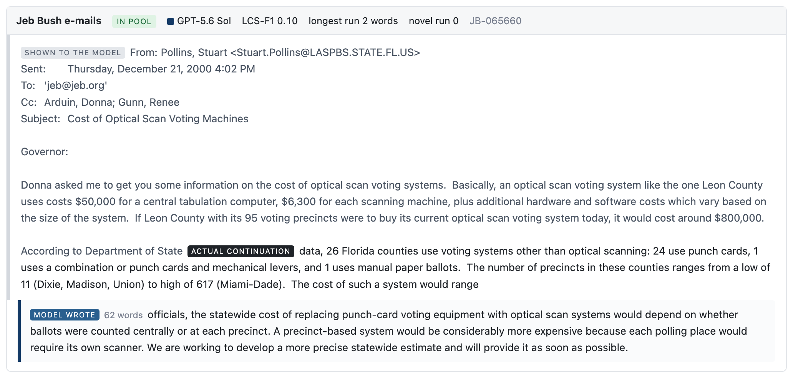
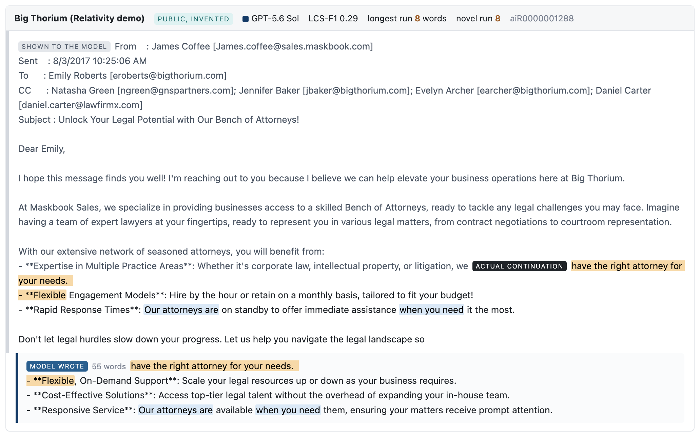
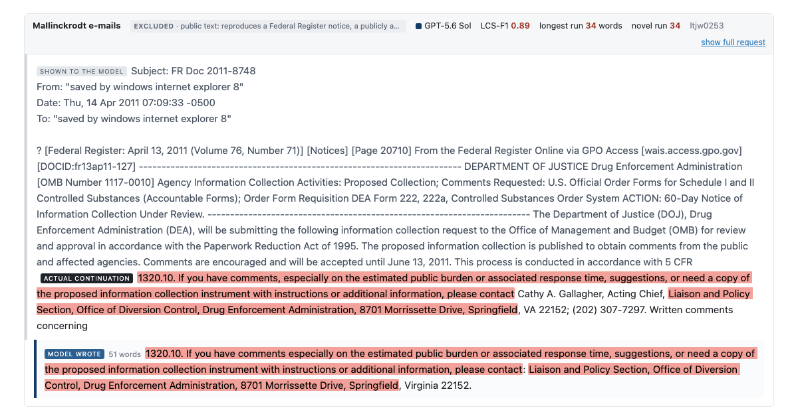
public_reproduction: it measures memorisation of the Federal Register, not of the collection.What non-recitation does and does not prove
Endo as the real-world post-cutoff check. A production published after every model's cutoff, from a matter they can know: V LCS-F1 0.15 / 0.14 / 0.15 against Veridian's 0.13–0.17; entity recall 0/30; recognition d′ 0.6 / −1.1 / −0.7; label recall 47–52 %; but M0 identified by all three and M1 70 / 55 / 70 %. The clearest "known case, unseen documents" profile in the study, Enron's pattern from the other side, and the recommended held-out benchmark going forward (caveat: its gold is a three-OpenAI-model panel).
5. Test 3 — does knowing the case change the score?
Definition and sign convention
Classify a fixed sample twice — once as-is (named), once with every person, organisation and place consistently replaced by invented ones (renamed) — and compare F1 per request, paired by document. Renaming has a mechanical cost of its own (the model loses nothing it knows but has to read unfamiliar tokens), so the raw Δ is never the quantity of interest. Two subtractions remove it:
Knowledge effect = ΔF1(renamed − named) on matter requests − ΔF1(renamed − named) on control requests, on the same documents, drawn jointly in each bootstrap resample.
Sign. Negative = the real names were worth something on the matter requests (renaming hurt them more than it hurt the controls). Zero = they were not. Positive = renaming hurt the controls more, which is noise or a renamer artefact, not knowledge.
Cross-corpus variant (when no in-corpus control exists): ΔF1(corpus) − ΔF1(Veridian renamed), the pure renaming floor. Loose, because the two renamers are different treatments; used for CUAD and as a secondary column elsewhere.
Matter vs control requests: Enron Complaint J (seven TREC 2010 requests: prepay transactions, FAS 140, financial analysts, document destruction, energy schedules, financial forecasts, plus fantasy football as an in-mailbox control) versus Complaint K on the same mailbox (an unrelated oil-spill fact pattern, three requests); Jeb Bush matter topics (recount 2000, Rilya Wilson, Medicaid reform, George W. Bush, Terri Schiavo — the events the M1/M2 probes produced unprompted) versus seven control topics no model recited (Movie Gallery, condominiums, bottled water, marketing, faith-based, NRA ×2); Big Thorium requests 1–6 (the aiR criteria partitioned) versus 7–8 (nuclear compliance, remote work).
The renamer
ediscovery_bench/ablation/names.py (Renamer) is a deterministic dictionary with four classes: phrases (organisations, products, places, domains; longest-first, case-insensitive), rare surnames (replaced wherever capitalised), common-word surnames (words that are also English words — Lee, Park, Grant, Reid — replaced only in full-name position after a known first name or on header lines), and first names (kept by design: "Ken" alone carries no identification). E-mail display names, Lotus paths and Exchange aliases are handled; local parts follow the surname. Enron's people table was harvested from header fields (≈ 2,300 surnames); Jeb Bush's maps the Governor and family, the 2000 tickets and litigation, and 715 public figures while keeping Florida, Tallahassee, agencies and statutes (renaming the state would break the topical relevance of most requests); CUAD's ContractRenamer maps parties and their defined-term aliases, products, signature-block people, US-state jurisdictions, every date (year shifted −3..+3 per contract) and every dollar amount (× 0.6–1.5, re-rounded). v2 fixes (2026-10-06, after the audit in §7): bare short forms of mapped products (Apex → Summit), request-named surnames forced into the replace-everywhere class, role words (Counsel, Manager, General, Quality) excluded from the name tables, title and initial positions ("Dr. Feld", "D. Mitchell"), three-letter surnames in local parts (mlee@ → mhan@), underscore as a word boundary. The Big Thorium mapping was built with v2 and the cast's dictionary-word surnames (Clark, Smith, Baker, Carter, Reed, Archer) forced rare from the start; its residual audit was zero before any renamed run.
Round 1 — Enron J vs K, Veridian, Mallinckrodt brief (2026-10-03; Veridian re-run 2026-10-06)
| System | ΔF1 Enron J | ΔF1 Enron K | ΔF1 Veridian (v2) | Knowledge effect J − K | J − Veridian |
|---|---|---|---|---|---|
| Luna | −0.2 [−2.0, +1.6] | −1.8 [−4.1, +0.3] | −0.1 [−1.0, +0.7] | +1.6 [−1.2, +4.6] | −0.1 [−2.1, +1.9] |
| Terra | −2.0 [−4.4, +0.1] | +0.6 [−1.5, +2.7] | −0.4 [−1.2, +0.5] | −2.6 [−5.8, +0.5] | −1.7 [−4.1, +0.6] |
| Sol | +1.1 [−0.9, +2.9] | −1.0 [−2.6, +0.7] | −1.0 [−1.9, −0.2] † | +2.1 [−0.6, +4.6] | +2.1 [−0.0, +4.1] |
| Jev | −1.7 [−3.6, +0.1] | −1.7 [−3.6, +0.2] | −0.3 [−0.8, +0.2] | +0.0 [−2.6, +2.6] | −1.4 [−3.4, +0.4] |
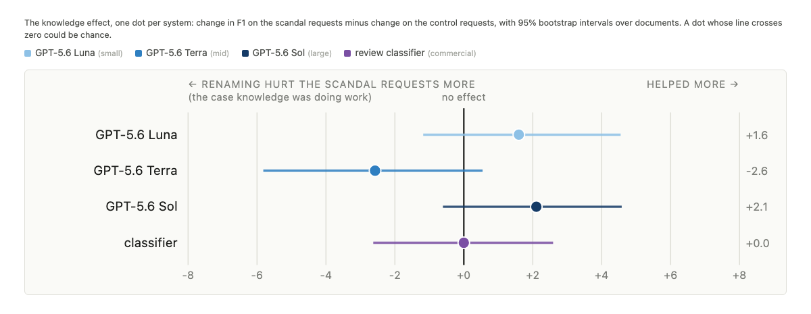
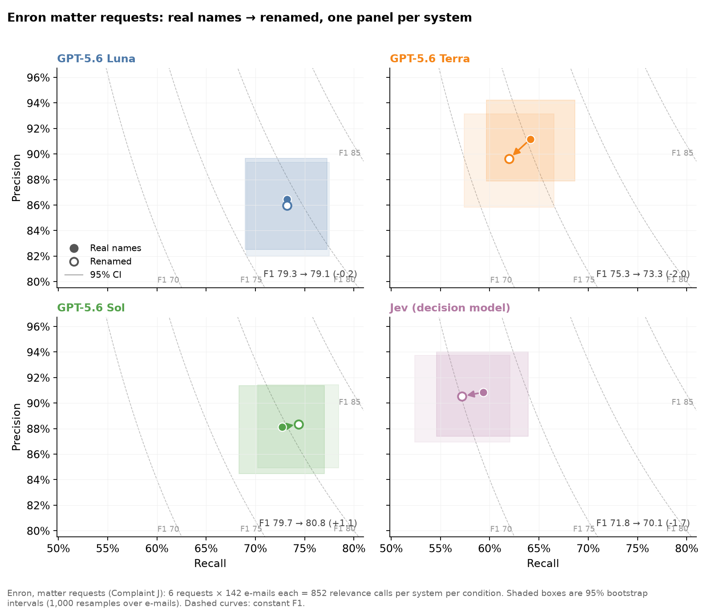
Dose–response on Enron J (ΔF1 by number of knowledge-bearing names per document, 0 / 1–2 / 3+): Luna +1.0 / +0.7 / −2.3, Terra −0.2 / −2.6 / −4.3 [−7.9, −1.0], Sol +3.1 [+0.5, +5.9] / −1.6 / −0.5, Jev −1.7 / +0.0 / −2.5. Terra is the one system with a monotone pattern; Sol's gain on zero-name documents runs the other way. In-mailbox control (fantasy football): Δ −0.7 / +1.4 / −0.1 / +0.0.
Jev on FAS 140 (round 1's loose end): ΔF1 −18.2 [−27.6, −10.4], 12 positives lost and none gained, 7 of the 12 naming Raptor/Talon/LJM2/Chewco (p 0.5–0.6 → 0.1–0.4), while Terra and Sol gained +13.6/+16.4 on the same request. The bare-token check (§3) showed this is not a name reflex; T1 showed the knowledge is used when the token sits in substantive text.
Round 2 — CUAD (rename + paraphrase) and Jeb Bush (2026-10-04; Terra added 2026-10-06)
CUAD needed a second perturbation. What the models hold here is the text (document-level memorisation and all 41 clause categories), so renaming parties cannot remove it; paraphrase (GPT-5.6 Luna at temperature 0, a strict preservation prompt, deterministic checks on numbers, quoted terms, capitalised-term recall ≥ 0.8 and length ratio, one retry; Terra judges legal equivalence on a sample: 89/100) removes the memorised surface, which the finish-the-document probe confirms directly: Sol's LCS-F1 on the paraphrased windows fell 0.315 → 0.279 and ≥ 15-word runs 10 % → 6 %, while renaming left it at 0.302 / 9 %. Sample: every positive-bearing excerpt (718) plus 482 negatives over all 102 contracts = 1,200 excerpts × 12 clause requests; cluster bootstrap by contract. Controls: within-CUAD dose–response against a per-contract memorisation score (primary) and the identical paraphrase pipeline on 500 Veridian documents (secondary; different genre, stated).
| System | ΔF1 renamed | ΔF1 paraphrased | Veridian renamed (v2) | Veridian paraphrased | Rename effect (CUAD − Ver.) | Paraphrase effect (CUAD − Ver.) |
|---|---|---|---|---|---|---|
| Luna | −0.6 [−1.6, +0.4] | −1.3 [−2.7, −0.0] † | −0.1 [−0.9, +0.6] | −0.5 [−1.8, +0.7] | −0.4 [−1.7, +0.7] | −0.8 [−2.6, +1.0] |
| Terra | −0.7 [−1.7, +0.3] | −0.3 [−1.5, +0.9] | −0.4 [−1.2, +0.4] | −0.3 [−1.6, +0.9] | −0.3 [−1.6, +1.0] | +0.1 [−1.6, +1.7] |
| Sol | +0.2 [−0.8, +1.2] | −0.4 [−1.4, +0.5] | −1.0 [−1.9, −0.2] † | +1.0 [−0.1, +2.2] | +1.2 [−0.1, +2.5] | −1.4 [−2.9, +0.0] |
| Jev | +0.0 [−0.6, +0.7] | −0.3 [−1.2, +0.6] | −0.3 [−0.9, +0.3] | −0.3 [−1.4, +0.8] | +0.3 [−0.5, +1.3] | −0.0 [−1.4, +1.5] |
No dose–response: Δ does not grow with the contract's memorisation score for any system or perturbation (Spearman ρ −0.02 … +0.20, none significant). Luna's −1.3 † paraphrase Δ coincides with the clause types the fidelity judge flagged as not legally equivalent (change_of_control 2/5, license_grant 2/10, anti_assignment 2/11, ip_ownership 1/7, non_compete 1/6, insurance 1/2 — 11/100), so it is consistent with ≈ 10 % infidelity rather than knowledge. Before the Veridian fix the rename-effect column read +2.2 †, +2.5 †, +1.9 † for Terra, Sol and Jev; those were artefacts of the leaky v1 floor and are withdrawn. Reading: CUAD results rest on clause-type competence; perturbing the memorised surface moves F1 by about a point, no more than on an unseen corpus, and no more on the contracts the models remember best.
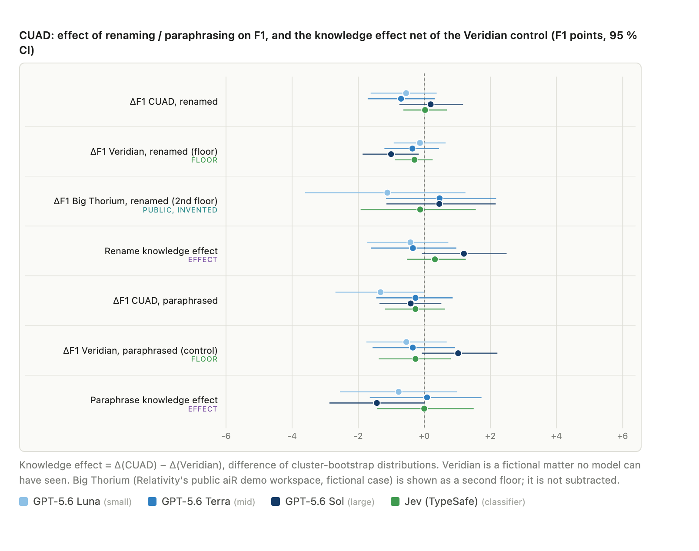
Jeb Bush. 1,000 e-mails from the study's eval sample (up to 60 gold positives per request, the rest hard-negative and random strata), 12 requests asked of every document in one call, same documents in both conditions. Renaming removes identification of the people, not the state: the Governor and family (Jeb Bush → Cal Weston), the 2000 tickets and litigation (Bush v. Gore → Weston v. Hartwell), the people named in the requests, senior staff and 715 public figures; residual Jeb/Bush in body text: 0 of 1,000.
| System | ΔF1 all | ΔF1 matter | ΔF1 control | Knowledge effect (matter − control) | ΔRecall matter | ΔPrecision matter |
|---|---|---|---|---|---|---|
| Luna | −0.8 [−1.9, +0.2] | −0.2 [−2.1, +1.5] | −1.3 [−2.5, −0.0] † | +1.0 [−1.2, +3.2] | −2.6 [−4.6, −1.0] † | +1.6 [−1.0, +4.3] |
| Terra | −0.3 [−1.3, +0.7] | −1.6 [−3.2, +0.1] | +0.7 [−0.6, +2.0] | −2.3 [−4.3, −0.3] † | −2.6 [−4.5, −1.0] † | −0.9 [−3.0, +1.4] |
| Sol | −0.2 [−1.1, +0.7] | −0.2 [−1.6, +1.2] | −0.3 [−1.5, +1.0] | +0.1 [−1.8, +1.9] | −0.3 [−2.1, +1.3] | −0.1 [−1.9, +1.8] |
| Jev | −0.5 [−1.6, +0.6] | −2.4 [−4.7, −0.2] † | +0.7 [−0.1, +1.6] | −3.1 [−5.5, −0.8] † | −6.2 [−9.1, −3.4] † | +3.7 [+1.2, +6.5] † |
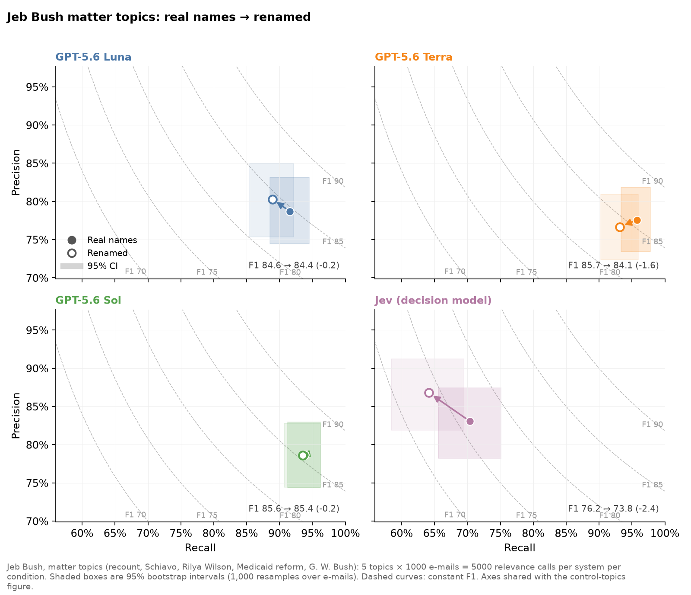
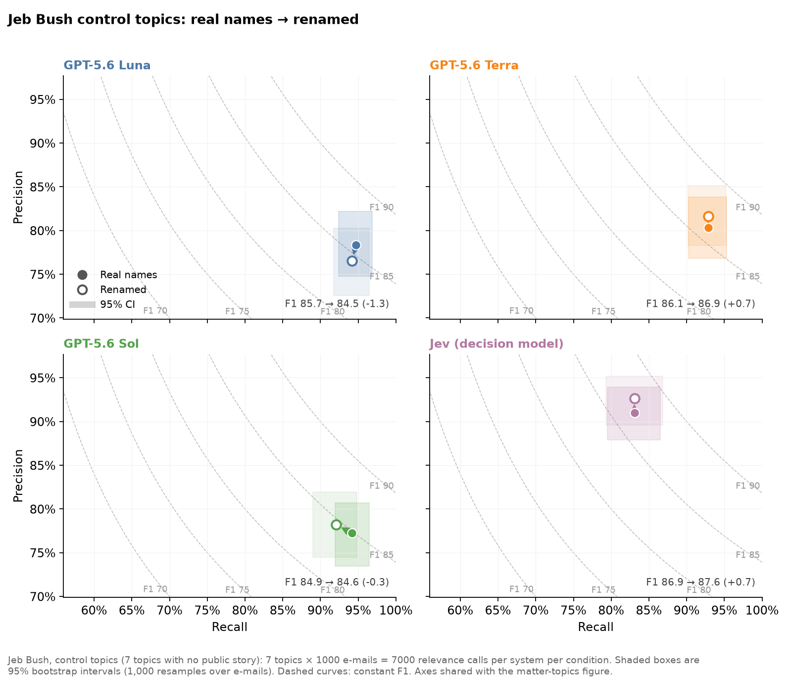
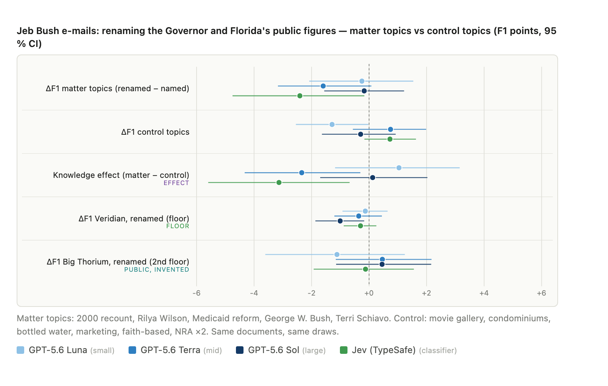
Leak check on the renamed sets (bench ablation2-leak, 2026-10-06, 756 answers): shown renamed Jeb Bush e-mails and asked whose collection they come from, Luna said Jeb Bush for 104/150 (69 %), Terra 128/150 (85 %), Sol 141/150 (94 %) — from myflorida.com, Tallahassee and the policy context. Shown one renamed CUAD excerpt per contract and asked which real companies signed: 11 / 23 / 33 of 102 named a real party. Together with Enron's 60–94 %, this is why every knowledge effect in the study is a lower bound: renaming removes the names, not the recognition of the case.
Veridian floor and Big Thorium second floor
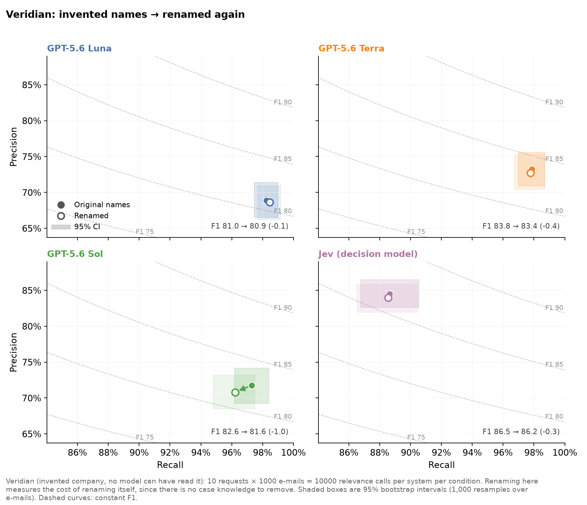
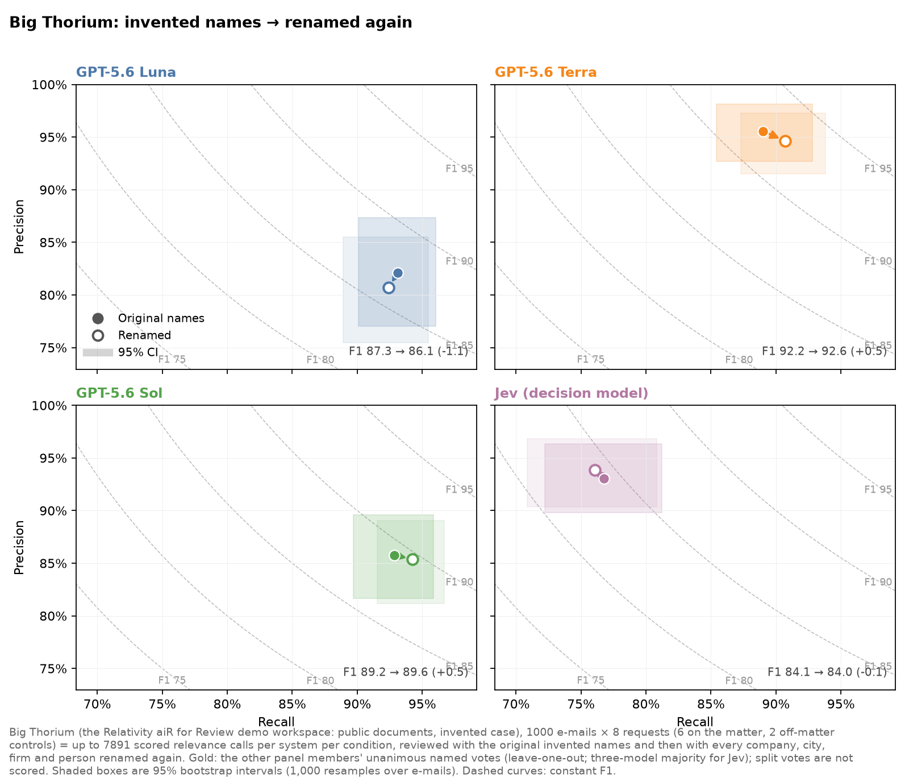
| Big Thorium | named F1 | renamed F1 | ΔF1 | matter Δ | control Δ | Knowledge effect | Brief ΔF1 (n ≈ 2,340) |
|---|---|---|---|---|---|---|---|
| Luna | 87.3 | 86.1 | −1.1 [−3.6, +1.2] | −2.7 [−6.5, +0.8] | +0.7 [−1.9, +3.3] | −3.4 [−7.8, +0.7] | −0.8 [−4.3, +2.7] |
| Terra | 92.2 | 92.6 | +0.5 [−1.2, +2.2] | +1.0 [−1.8, +4.0] | +0.0 [−1.5, +1.6] | +1.0 [−2.0, +4.3] | −1.8 [−3.9, +0.2] |
| Sol | 89.2 | 89.6 | +0.5 [−1.1, +2.2] | +1.0 [−1.5, +3.9] | −0.2 [−2.2, +1.9] | +1.3 [−2.0, +4.5] | +0.6 [−1.1, +2.5] |
| Jev | 84.1 | 84.0 | −0.1 [−1.9, +1.6] | +1.9 [−0.7, +4.8] | −2.3 [−4.6, −0.5] † | +4.3 [+1.0, +7.8] † (artefact, see below) | −1.1 [−4.0, +1.7] |
Brief injection: adding knowledge instead of removing it
The converse manipulation. Append a one-page case brief to the context and classify the same documents again. Three arms: Mallinckrodt (a real brief, 1,840 documents × 8 requests, round 1), Veridian (Check D: a 1,431-token fictional brief — parties, products, people, deals and code names, timeline, outcome — on a stratified 491-document half), Big Thorium (Relativity's own aiR case summary, 1,059 words, on a 300-document positive-enriched subset).
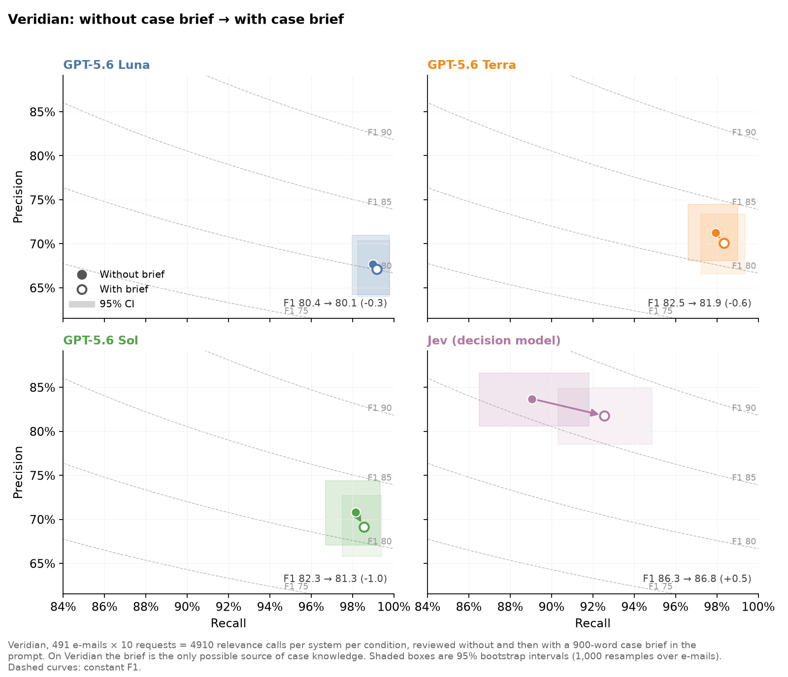
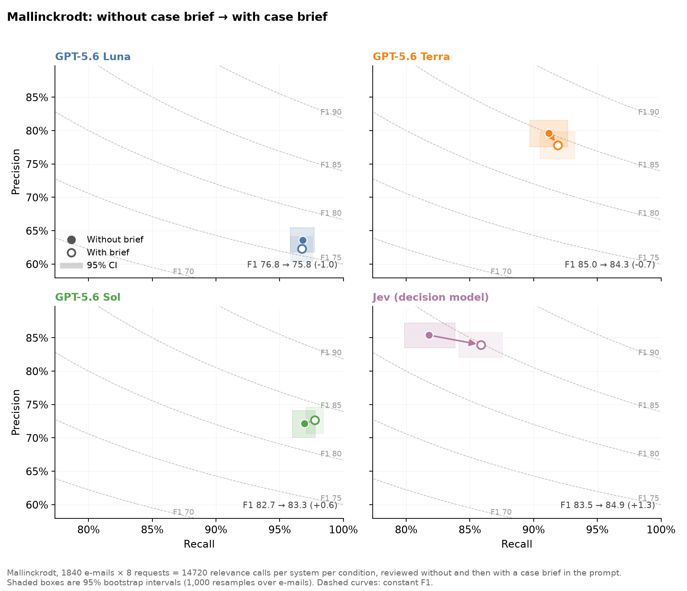
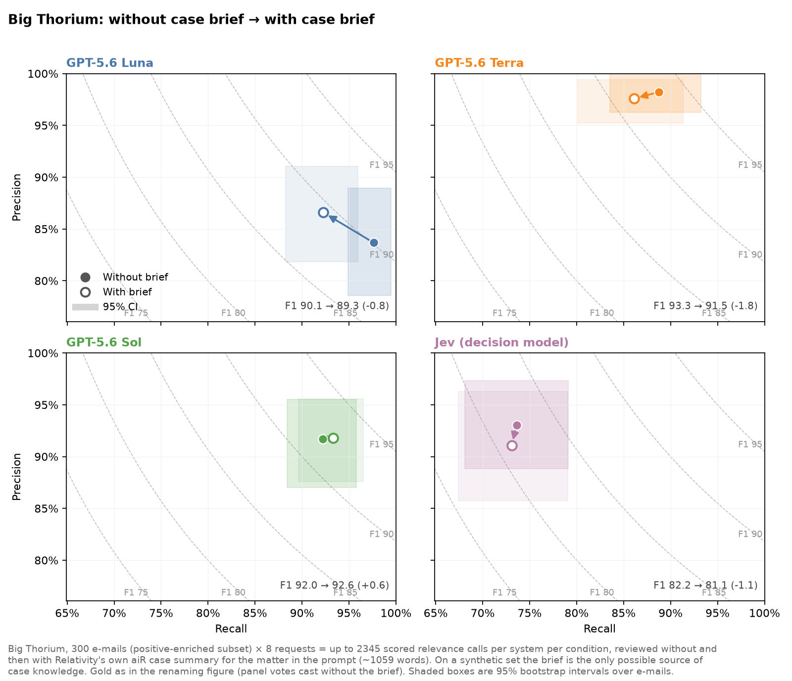
Circularity caveat on the panel-gold arms (Mallinckrodt, Big Thorium): the gold is the panel's without-brief majority, so a system that follows the brief away from the panel is scored as wrong; the brief effect there is a lower bound on agreement change, not an accuracy change. Veridian's gold is independent of the systems. The pattern is the same in all three: handing a system the one kind of knowledge it cannot have does not move F1 beyond noise; what it buys the decision model is a few points of recall at the cost of precision.
Full round-1 paired table (renamed − named, pooled over knowledge topics)
| arm | model | n pairs | F1 named | F1 renamed | ΔF1 | ΔRecall | ΔPrecision | r→w | w→r | McNemar p |
|---|---|---|---|---|---|---|---|---|---|---|
| enron_j | Luna | 994 | 0.793 | 0.791 | −0.2 [−2.0, +1.6] | +0.0 [−2.5, +2.5] | −0.5 [−2.3, +1.3] | 21 | 19 | 0.875 |
| enron_j | Terra | 994 | 0.753 | 0.733 | −2.0 [−4.4, +0.1] | −2.2 [−5.1, +0.7] | −1.5 [−3.1, −0.1] | 28 | 15 | 0.066 |
| enron_j | Sol | 994 | 0.797 | 0.808 | +1.1 [−0.9, +2.9] | +1.7 [−1.1, +4.3] | +0.2 [−1.5, +1.7] | 18 | 25 | 0.36 |
| enron_j | Jev | 994 | 0.718 | 0.701 | −1.7 [−3.6, +0.1] | −2.2 [−4.6, +0.0] | −0.3 [−2.0, +1.3] | 19 | 10 | 0.136 |
| enron_k | Luna | 999 | 0.618 | 0.600 | −1.8 [−4.1, +0.3] | −2.0 [−4.3, +0.2] | +0.1 [−1.9, +2.3] | 25 | 16 | 0.211 |
| enron_k | Terra | 999 | 0.515 | 0.521 | +0.6 [−1.5, +2.7] | +0.8 [−1.0, +2.8] | −1.9 [−4.5, +0.3] | 15 | 15 | 1 |
| enron_k | Sol | 999 | 0.621 | 0.611 | −1.0 [−2.6, +0.7] | −1.0 [−2.8, +0.9] | −0.5 [−1.9, +0.7] | 15 | 9 | 0.307 |
| enron_k | Jev | 999 | 0.573 | 0.556 | −1.7 [−3.6, +0.2] | −1.6 [−3.5, +0.2] | −0.7 [−2.7, +1.3] | 19 | 10 | 0.136 |
| veridian | Luna | 10000 | 0.810 | 0.809 | −0.1 [−1.0, +0.7] | +0.2 [−0.5, +0.8] | −0.3 [−1.4, +0.9] | 72 | 67 | 0.735 |
| veridian | Terra | 10000 | 0.838 | 0.834 | −0.4 [−1.2, +0.5] | −0.1 [−1.0, +0.7] | −0.5 [−1.5, +0.6] | 63 | 53 | 0.403 |
| veridian | Sol | 10000 | 0.826 | 0.816 | −1.0 [−1.9, −0.2] | −1.1 [−2.1, −0.1] | −0.9 [−2.0, +0.1] | 79 | 54 | 0.037 |
| veridian | Jev | 10000 | 0.865 | 0.862 | −0.3 [−0.8, +0.2] | −0.1 [−0.9, +0.7] | −0.5 [−1.1, +0.2] | 22 | 15 | 0.324 |
| mnk ± brief | Luna | 14720 | 0.768 | 0.758 | −1.0 [−1.8, −0.2] | −0.1 [−0.8, +0.7] | −1.3 [−2.3, −0.4] | 209 | 154 | 0.0045 |
| mnk ± brief | Terra | 14720 | 0.850 | 0.843 | −0.7 [−1.5, +0.1] | +0.7 [−0.2, +1.6] | −1.8 [−2.9, −0.6] | 140 | 104 | 0.025 |
| mnk ± brief | Sol | 14720 | 0.827 | 0.833 | +0.6 [−0.1, +1.3] | +0.8 [+0.1, +1.6] | +0.5 [−0.5, +1.4] | 113 | 137 | 0.146 |
| mnk ± brief | Jev | 14720 | 0.835 | 0.849 | +1.3 [+0.5, +2.3] | +4.1 [+2.8, +5.4] | −1.4 [−2.5, −0.4] | 88 | 116 | 0.058 |
Big Thorium per-request ΔF1 (named → renamed)
| Request | Luna | Terra | Sol | Jev |
|---|---|---|---|---|
| rfp01_atlantis_rfp | −5.7 [−12.5, +2.2] | +0.0 [−5.3, +4.8] | +3.3 [+0.0, +8.9] | +0.0 [−5.2, +5.2] |
| rfp02_gifts | +0.0 | +2.6 [+0.0, +9.1] | +0.0 | +9.7 [+0.0, +27.1] |
| rfp03_officials | −1.0 [−5.2, +3.4] | +2.6 [−2.7, +7.8] | +1.5 [−2.0, +5.6] | +1.5 [−1.6, +4.9] |
| rfp04_contract | −6.0 [−21.9, +7.4] | −2.2 [−11.5, +6.8] | −3.0 [−12.5, +4.8] | +0.0 [−23.5, +23.5] |
| rfp05_third_party | no panel positives; unscored | |||
| rfp06_investigation | +0.0 | +0.0 | +0.0 | +3.0 [+0.0, +9.4] |
| rfp07_nuclear_compliance (control) | +0.0 [−2.9, +2.9] | +0.0 [−2.1, +2.0] | −0.8 [−3.3, +1.4] | −2.7 [−5.4, −0.6] † |
| rfp08_remote_work (control) | +2.7 [−2.4, +8.7] | +0.0 | +1.4 [+0.0, +5.1] | −1.5 [−5.4, +0.0] |
Panel positives per request: 37, 19, 76, 25, 0, 13, 122, 38. Check against the demo's human coding (document level): panel recall 15/18; per-system recall of the 18 human positives 0.78 / 0.78 / 0.83 / 0.67 named, unchanged or +0.05 renamed.
6. Generalisation checks A–D
Four checks on the central claim — on the matters tested, knowing the case did not detectably change review accuracy — chosen so that each could have undermined it (bench verify, ediscovery_bench/verify/; new spend $10.95 of a $15 cap plus $0.12 Jev).
| Check | Design | What it would show if contamination helped | Result | Verdict |
|---|---|---|---|---|
| A Knowledge-dependence error analysis (Enron J) | Luna tags every scored document as knowledge-dependent (relevance visible only with outside Enron knowledge) or self-contained; tags describe documents, are shared across systems, and the tagger is itself a system under test | Higher named accuracy on KD documents and a larger named→renamed drop on them | 6.9 % [5.4, 8.9] of documents are KD (FAS 140 25 %, everything else ≤ 8 %). Named accuracy on KD documents 61 / 61 / 64 / 66 % vs 83 / 81 / 83 / 78 % on self-contained; Jev, with the least measurable case knowledge, is the most accurate on them. ΔF1 on the KD subset +4.1 / +4.0 / +17.3 [+4.8, +32.1] (Sol: renaming helped) / −15.7 [−33.3, −0.7] (Jev, 5 r→w vs 2 w→r on 59 documents) | Strengthens. What the channel could affect is a small slice, and on it no system behaves as if knowledge were helping; the LLMs' edge over Jev sits on self-contained documents |
| B Ranking stability (existing results, no calls) | Rank order of systems across corpora; F1 against each LLM's own case-knowledge composite | A stable ranking that favours the LLMs more on better-known matters | Kendall W over F1 ranks 0.14 across 5 corpora × 4 systems (p ≈ 0.56; four objects give W almost no power). Within each LLM, F1 vs own case score ρ 0.0 / −0.2 / −0.2. The mean-LLM − Jev gap widens monotonically with case knowledge: Enron J (case 84) +6.3 → Mallinckrodt (53) −2.0 → Veridian (0) −4.1 | Ambiguous, leans against. The gap pattern is what contamination predicts, but equally what corpus type predicts (human-judged e-mail at 49 % prevalence vs panel and planner gold at 10 %); A and D test the mechanism directly on both ends and find none. The weakest design; reported because it did not come out clean |
| C Counterfactual conflict documents | 30 templated documents per matter in FACTUAL and COUNTERFACTUAL versions, the latter contradicting a well-known fact so that relevance to a nameless request flips (Roxicodone as "our over-the-counter antacid"); product-nameless contexts for Mallinckrodt and Endo | Calls following world knowledge rather than the text, more for pre-trained facts than for in-context ones | Factual versions read at ≥ 97 %. Knowledge-following on counterfactuals, pooled over four real matters: Luna 17 %, Terra 14 %, Sol 12 %, Jev 8 %; almost entirely one-directional (a hot token keeps a document responsive: 27 / 24 / 18 / 15 %; the reverse 4 / 2 / 4 / 0 %); concentrated on Jeb Bush, Mallinckrodt, Endo; near zero on Enron. Veridian analogue (in-context facts contradicted): 17 / 10 / 3 / 10 %; no system's real-matter rate differs from its Veridian rate beyond noise | Mixed, neutral. The strong form of the claim ("knowledge plays no role in the call") is false: systems let prior facts outweigh the page on engineered conflicts, Jev least, Luna most. But no more for pre-trained than in-context facts, and A says such conflicts are rare on real documents |
| D Knowledge injection on Veridian | A 1,431-token fictional brief appended to the context; 491-document stratified half; paired against the existing named run | Higher F1 when the only possible source of case knowledge is supplied | ΔF1 −0.3 [−1.7, +1.1] / −0.6 [−2.1, +0.8] / −1.0 [−2.6, +0.5] / +0.5 [−1.1, +2.2]; Jev recall +3.5 [+1.5, +5.6] against −1.9 precision; 1.2–2.0 % labels change; McNemar p ≥ 0.16. Same picture as Mallinckrodt and Big Thorium briefs | Strengthens. Narrow intervals, paired, same mechanism as the ablation; the strongest signal of the four |
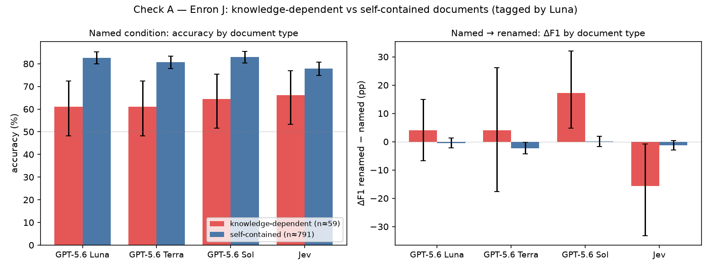
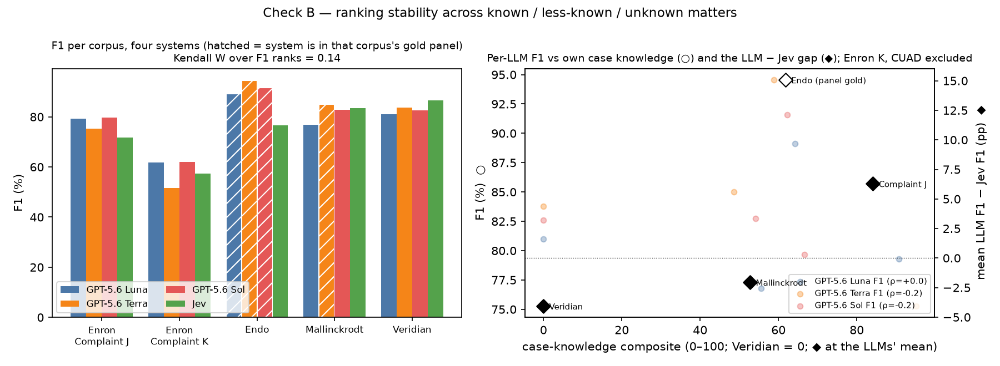
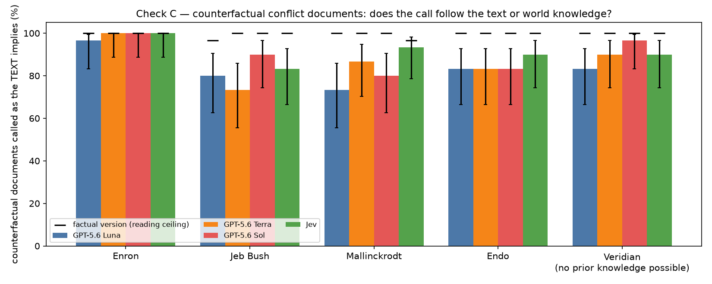
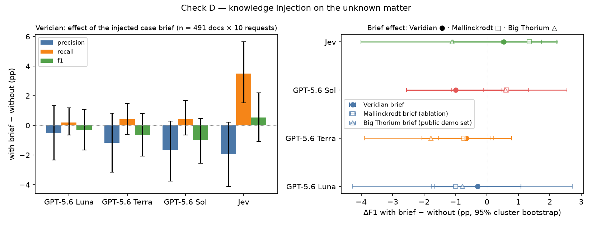
Overall. The two checks that test the mechanism directly (A: where knowledge could matter, does it? D: when knowledge is supplied, does it?) come out for the claim; C shows the channel exists but is small and no larger for pre-trained than for in-context facts; B is the one check whose surface pattern runs the other way and it cannot separate case knowledge from corpus type. Carry-forward wording: on the matters tested, knowing the case did not detectably change review accuracy, including when the knowledge was supplied in the prompt; the systems can be made to override a document with a well-known fact, but such conflicts are rare in real collections and the effect did not reach accuracy.
7. Renamer audit
Prompted by a result that should not have happened: Veridian is entirely fictional, so renaming its invented names to other invented names should cost nothing, yet in the v1 run Terra and Sol lost 2–3 F1 points with intervals off zero. The user asked whether the same could be true elsewhere. Every renamed and paraphrased set was audited without API calls (results/ablation/renamer_audit.md) for five classes of defect, and per-request recall losses were tied back to the documents carrying residuals.
| Leak class | What it looks like | Why it mimics lost knowledge |
|---|---|---|
| Unmapped short form or alias | "ApexHip" → "SummitHip" but bare "Apex" left; "SIGA" for SIGA Technologies | The renamed request says Summit; the document says Apex; the model reads a mixed document and the match fails |
| Common-word surname rule too conservative | "Dr. Feld", "Feld's", bare "Rao" left because Feld and Rao were on the common-word list (replaced only after a first name or on header lines) | The request names Dr. Brandt; the body still says Dr. Feld |
| Over-replacement of ordinary words | "General Counsel" → "General Wexham"; "Scheduling" → "Melwick"; "Gov. Gray Davis" → "Lanford. Gray Harwood"; "Tuesday, May 16" → "Tuesday, Strounan 16" | Role words and dates lose meaning; a request about energy schedules cannot find "Scheduling" |
| E-mail local-part residue | mlee@ beside the renamed display name "Marcus Han" | Identification leak; a careful reader sees two names for one person |
| Request / document inconsistency | Requests renamed with one mapping, documents with another, or unrenamed fields passed through | Direct mismatch; checked and clean on every arm (Jeb's unused structured/subparts fields are the only pass-through) |
Per-set findings
| Set | Issue | Docs affected | Requests affected | Severity | Action |
|---|---|---|---|---|---|
| Veridian renamed (v1) | bare Apex unmapped | 246 / 1,000 | rfp13, 07, 03, 09, 01, 08 | headline | Fixed (renamer v2) and re-run, $14.21 |
Feld, Rao left as Dr. Feld / Feld's / bare | 81 / 60 (109 union) | rfp07, 03, 08 | headline | ||
| old e-mail local parts beside new display names | 144 (224 addresses) | spread | minor | ||
| General Counsel → General Wexham 27; Quality Manager → Harhurst 5; Barr → Barr; D. Mitchell 4 | — | — | cosmetic | ||
| Enron J / K renamed | Enron / ENE / enron.com residue | 0 / 0 | — | none | Not re-run ($9.4 optional): KE on clean documents +1.2 / +1.8 / −1.0 / 0.0 vs published +1.6 / +2.1 / −2.6 / 0.0; every interval through zero either way |
| header-derived ordinary words replaced as surnames: Scheduling → Melwick 18, Gov. → Lanford. 19/24, May → Strounan 12/10, Management → Rosman, Businesses → Dunman | 69 / 68 | energy_schedules (J): 9 of 18 lost positives in mangled docs | specific request | ||
| identifiers kept or missed: 1400 Smith 42/31, EOL 13/15, Houston, Texas (by design) | 55 / 45 | — | cosmetic | ||
| Jeb Bush renamed | Jeb / Bush in body text | 0 | — | none | Not re-run: KE on the 958 clean documents +0.9 / +0.6 / −2.5 / −2.9 vs +1.1 / +0.1 / −2.4 / −3.2; the gw_bush recall drop occurs on clean documents (53 of 60 positives) and is the measured effect |
| title + public surname left (Senator Graham, Mayor Hood, Speaker Byrd, Congressman Foley); two leftover domains | 22 (matter-pos 13/273, control-pos 4/360) | — | cosmetic | ||
| Washington → Drayman 49, Vice President → Vice Tolwood 19, Letters to the Editor → Zelgate 7 | 66 (matter 24 / control 23, balanced) | — | cosmetic | ||
| CUAD renamed | unmapped acronyms and short names (SIGA, NFLA, KI, HPIL, MINDA/IMPCO, Columbia Laboratories) | ≈ 60 excerpts, 9 contracts | none (recall on those excerpts unchanged for every system) | cosmetic | Identification only; no action |
| CUAD paraphrased | 11 / 100 sampled rewrites judged not legally equivalent | ≈ 130 / 1,200 est. | change_of_control, license_grant, anti_assignment, ip_ownership, non_compete, insurance | specific request | Caveat on Luna's −1.3 † (same clause types); net-of-Veridian contrasts unaffected |
| Veridian paraphrased | 49/50 equivalent; recall flat on every request | — | — | none | Clean control |
Veridian before and after
| Residual token | v1 renamed docs | v2 |
|---|---|---|
| bare Apex | 246 | 0 |
| Feld | 81 | 0 |
| Rao | 60 | 0 |
| Mitchell (initial form) | 4 | 0 |
| General Wexham / Harhurst | 27 / 5 | 0 / 0 |
| old e-mail local parts | 143 | 0 |
Remaining residuals after v2 are English words that are also surnames (Central Park, Lee Hecht Harrison, "Martin Ross"; about a dozen documents), left by design. A 20-document three-way diff (original / v1 / v2) showed only intended substitutions; one new mangle found during checking ("Metro Park" → "Metro Cho") was fixed before the run.
| System | Named P / R / F1 | v1 renamed → ΔF1 | v2 renamed → ΔF1 [95 % CI] | ΔF1 on leak-touched docs (v1) | ΔF1 on clean docs (v1) |
|---|---|---|---|---|---|
| Luna | 68.9 / 98.3 / 81.0 | 70.8 / 95.1 / 81.2 → +0.2 | 68.6 / 98.4 / 80.9 → −0.1 [−1.0, +0.7] | −0.5 | +0.7 |
| Terra | 73.2 / 97.9 / 83.8 | 73.1 / 90.4 / 80.8 → −2.9 † | 72.7 / 97.8 / 83.4 → −0.4 [−1.2, +0.5] | −5.0 | −2.0 |
| Sol | 71.7 / 97.3 / 82.6 | 72.0 / 90.7 / 80.3 → −2.3 † | 70.8 / 96.2 / 81.6 → −1.0 [−1.9, −0.2] † | −3.5 | −1.5 |
| Jev | 84.5 / 88.7 / 86.5 | 84.4 / 84.9 / 84.6 → −1.9 † | 84.0 / 88.6 / 86.2 → −0.3 [−0.8, +0.2] | −3.5 | +0.2 |
120 of the 138 responsive documents the four systems lost after v1 renaming (on the six requests with a ≥ 5-point recall drop) were in leak-touched documents; documents containing both Apex and Feld/Rao lost ≈ 14 F1 points for Terra and Sol. The recall column tells the story most plainly: v1 ΔRecall −3.2 / −7.5 / −6.6 / −3.8 became +0.2 / −0.1 / −1.1 / −0.1.
What moved downstream, and what did not
- Round-1 "ΔF1(J) − ΔF1(Veridian)" column: Sol +3.4 † → +2.1 [−0.0, +4.1].
- Round-2 "rename effect: CUAD − Veridian": Terra +2.2 † → −0.3, Sol +2.5 † → +1.2 [−0.1, +2.5], Jev +1.9 † → +0.3; all through zero. The "CUAD renaming artefact" the study had been explaining disappeared with the floor.
- Δ(Jeb all) − Δ(Veridian): all through zero.
- The sentence reading Terra's Jeb Bush −2.3 as "of the order of the Veridian floor" is withdrawn; the floor is −0.4.
- Unchanged: the Enron and Jeb Bush knowledge effects (same-collection controls, no Veridian dependence); the headline (within ±2.6, one of nine LLM intervals off zero); every verbatim, entity, label and matter-knowledge result.
- Sol keeps a small genuine renaming cost on Veridian (−1.0, interval just off zero) — the allowance to make when reading Sol's renaming results.
8. Decision log
Chronological. Each entry gives the decision and the reason it was taken, as recorded in the design docs and the working transcript.
- Use Veridian as the floor for every probe; add explicit positive controls after the first pass (2026-10-03).
- The first draft used Enron as the verbatim ceiling on the grounds that it is in The Pile. The run showed single-exposure e-mails are not reproduced even by the largest model, so a corpus whose status was the thing under test could not serve as a ceiling. The founding documents (Project Gutenberg) and the Kaggle Titanic CSV were added: text replicated millions of times, so saturation is guaranteed and the scale gradient (Luna 0.36 → Terra 0.63 → Sol 0.94) calibrates every other reading.
- Treat the vendor's "trained on synthetic data" statement as a claim under test, never a premise.
- The study compares Jev with the LLMs; assuming the comparison system is clean would beg the question. Jev is run through every arm its interface allows (ablation, M3, T1–T4, checks A/C/D), and every result is reported as consistent or inconsistent with the statement. The T1 result (real-world token knowledge at LLM-scale effect sizes) is compatible with the statement only if the synthetic data was generated by a model that has that knowledge, which is the natural way to make such data; the test cannot separate the two.
- Rebuild the verbatim pool with a rules layer plus an LLM screen (2026-10-04).
- Inspection of the top-scoring windows showed boilerplate, embedded public text (the 34-word Federal Register run) and prompt-copyable continuations. A good V item is custodian-authored, matter-specific text with an unpredictable continuation. Verdicts are cached so re-runs are free; replacement windows cost $0.57. Conclusions held on the better pool; the ceiling texts are exempt from the public-reproduction class by design.
- Score verbatim statistics over answered items only; report refusals separately (2026-10-04).
- Only Luna refuses, and it refuses most on the floor corpus (25 % on Veridian), so scoring refusals as zero deflated the floor and made Enron look significantly above it. A refusal is a policy reading, not a memorisation reading.
- Balance label-recall pairs within topic, not across the corpus.
- Sol scored 70 % on Mallinckrodt by answering "relevant" to every
*_broadtopic; the question text carried label information. Pairs are now balanced per topic and the report prints the topic-only ceiling (50 %) beside the accuracy. - Define the knowledge effect as a within-corpus difference (matter − control on the same documents), with the Veridian floor as a secondary cross-corpus column.
- Renaming has a mechanical cost that differs by corpus and renamer. The same-documents subtraction removes it exactly; the Veridian subtraction removes it only approximately (different treatment), which is why the Veridian renamer defect could distort the cross-corpus columns without touching the Enron or Jeb Bush knowledge effects.
- Strip EDRM production headers (X-SDOC, X-ZLID) from both Enron conditions.
- The leak check showed models naming Enron from them. Stripping in both conditions keeps the pair comparable.
- Add a second perturbation (paraphrase) for CUAD; measure the removed surface directly.
- CUAD is the one corpus with document-level memorisation and benchmark knowledge; renaming parties cannot remove memorised text. The finish-the-document probe on the paraphrased windows (Sol 0.315 → 0.279; ≥ 15-word runs 10 % → 6 %) proves the paraphrase removed what it was meant to remove, so the null effect on F1 is informative.
- Rename Jeb Bush's people, not Florida.
- Renaming the state would break the topical relevance of most requests (Tallahassee, DCF, AHCA, Florida statutes). The mapping removes identification of the Governor, his family, the 2000 litigation and 715 public figures; the leak check then measures what is left (69–94 % still identified).
- Run round 2 as the cheap version first (Terra dropped under the $75 rule), add Terra when the key was topped up (2026-10-04 → 10-06).
- Budget rule: full > $75 → run the version without the mid model first; Luna and Sol span the price/quality range and Sol carries the strongest memorisation signal. Terra's six runs ($26.62, each within 2 % of estimate) completed the table and produced the one off-zero LLM interval.
- Redesign T1 with token-free contexts (v2) and assert it in code (2026-10-04).
- A prompt audit found the Mallinckrodt and Endo task contexts named the very tokens being swapped, in both signal and decoy roles, so a real token could match the prompt. Check C had found the same independently. The v2 contexts are the product-nameless ones written for Check C; Enron and Jeb Bush predictions are carried over because their prompts were already clean; v1 is archived. The reading holds via the signal − decoy contrast (4 of 4 off zero in both versions).
- Run the four generalisation checks as designs that could each undermine the claim (2026-10-04).
- A claim defended only by the experiments that produced it is weak. A and D test the mechanism directly; B is the weakest design and is reported because it came out ambiguous; C shows the strong form of the claim is false and bounds how much that matters.
- Calibrate every write-up against overclaiming (2026-10-04).
- Standard: state what was observed, name the inference it supports, say what would overturn it. "They have not read the e-mails" → "no evidence of document-level memorisation under a probe that detects it elsewhere"; "the effect is zero" → a bound with intervals through zero; "every model, every matter" → "26 of 27, the miss named"; correlations reported per model with significance.
- Audit every renamed set when the Veridian result looked wrong; fix and re-run only Veridian (2026-10-06).
- Fictional-to-fictional renaming cannot cost 2–3 points. The audit tied 87 % of lost positives to residual tokens. Veridian is the floor for three published columns, so it was re-run ($14.21). Enron J/K ($9.4) and Jeb Bush ($15.4) were not: their defects are cosmetic, the knowledge effects on clean documents are the same within noise, and no interval changes status. CUAD's rename residue affects identification only; its paraphrase infidelity is a caveat, not a fix.
- Add Big Thorium as a sixth collection; describe it as public documents, invented case (2026-10-06).
- A second floor on which document exposure is possible closes the gap between Veridian (private, invented) and CUAD (public, no case). A web search found no indexed page naming the set and the worker first described it as internal; the user confirmed Relativity distributes it as the aiR demo workspace and the wording was corrected everywhere. The empirical point survives either way: no model recites, recognises or recalls it.
- Big Thorium sampling 650 / 150 / 200 with the 18 human positives forced in; panel gold with leave-one-out.
- Nine in ten messages are off-topic filler, so a random 1,000 would carry too few matter documents; stratifying by matter-keyword / control-keyword / other (seed 20261006) gives the requests enough positives while keeping controls. The demo's own coding (18 positives, one coder, a BBQ invitation marked Responsive) cannot support recall intervals, so the Mallinckrodt/Endo panel procedure is reused with each LLM scored against the other two to remove self-circularity; agreement with the demo coding is reported as a check (15/18).
- Keep Jev's +4.3 Big Thorium "knowledge effect" out of the article.
- Wrong sign for knowledge, entirely from five control-request positives sitting within 0.1 of the threshold (83 % of Jev's flips vs 0–5 % for the LLMs). It is a surface-token sensitivity of the decision model and is documented in the report with that explanation.
- Reinterpret Terra's Jeb Bush −2.3 after the Veridian fix.
- With the renaming floor at −0.4 rather than −2.9, the −2.3 can no longer be called renaming cost. It is small but real, and the pages and article say so; the conditional wording in
effect2.pyandstory.pyis generated from the data. - What the article claims and does not claim.
- Claims: the models know the cases; no document-level memorisation of any e-mail collection; knowing the case changed review accuracy by at most a few F1 points, one of nine LLM intervals off zero; renaming is a weak blindfold so the effects are lower bounds; a brief does not help; Jev carries real-world matter knowledge and a small familiarity effect on public-figure topics, with no sign of memorised documents or labels. Does not claim: that the models never saw the e-mails; that the effect is zero; that the vendor statement is true or false; anything about Anthropic or Gemini models; anything beyond these matters at these sample sizes.
9. Costs
| Phase | Date | Realised USD | Notes |
|---|---|---|---|
| Contamination probes, Parts I + II + ladder (3 OpenAI models) | 2026-10-03 | 14.28 | Part I $3.32, Part II $9.57, ladder $1.39; list prices |
| Jev M3 header-only relevance | 2026-10-03 | 0.17 | 2,900 calls |
| Ablation round 1 (Enron J/K, Veridian v1, Mallinckrodt brief; 4 systems) | 2026-10-03 | 104.75 | $222.70 list; includes the superseded Veridian v1 run ($14.20) |
| Endo corpus, label panel and probes | 2026-10-03 | 33.50 | |
| Classifier-native tests T1–T4 | 2026-10-04 | 4.64 + 0.15 | OpenAI + Jev; T1 v2 re-run $0.51 under its own $3 cap |
| Ablation round 2 (CUAD rename + paraphrase, Jeb Bush; Terra added 10-06; leak checks) | 2026-10-04 / 06 | 83.18 | Cheap version $55.79; Terra $26.62 (within 2 % of estimate); leak checks $0.78 |
| Generalisation checks A–D | 2026-10-04 | 10.95 + 0.12 | A 0.30, C 1.67, D 8.98; $15 cap |
| Veridian renamed re-run (renamer v2) | 2026-10-06 | 14.21 | Luna 0.47, Terra 4.67, Sol 8.92, Jev 0.15; 40,000 rows, 0 errors, 15 min |
| Big Thorium (probes + named / renamed / brief, 4 systems) | 2026-10-06 | 34.14 | Probes 0.39; runs 33.75 (named 14.01, renamed 14.23, brief 5.51 at 142 % of estimate: longer documents, lower cache hit); $40 cap |
| Verbatim pool rebuild, LLM screen, between-passages probe | 2026-10-04 / 06 | ≈ 0.85 | Screen 0.25, replacements 0.57, six legal passages 0.025 |
| Total | 300.09 | As recorded in design/06 |
Spend ledgers: data/ablation/round2_spend.json (round 2 + Veridian re-run + Big Thorium runs = $131.14), results/verify/llm_spend.jsonl, results/jev_probe/llm_spend.jsonl. The OpenAI key ran out on 2026-10-04 during the leak check and was topped up on 2026-10-06; one Terra run hit a 120-row 429 burst and was resumed ($0.04). Every classification run landed within 2 % of its estimate except Big Thorium's (113–142 %, from document length and cache share).
10. Open items, next experiments, reproduction, file map
Open items
| Item | Why it matters | Cost / effort | Recommendation |
|---|---|---|---|
| Anthropic and Gemini keys | Nothing in the contamination study runs on them; the main eval's Sonnet 5 and Gemini 3.8 Flash results have no exposure measurement | Probe battery ≈ $5 for the small/mid roster; ablation arms scale with the per-call table in §2 | Run the probes at least; ablation on Jeb Bush if the budget allows |
| Big Thorium positive enrichment | The six matter requests share ≈ 140 scorable positives; per-request intervals are ±10–20 points | ≈ $15 | Optional; not needed for the floor conclusion |
| Code-name swap (T1) on Big Thorium | Would complete the Jev picture on the sixth collection | ≈ $0.50–1.00 per matter | Cheap; do it when convenient |
| Enron J/K renamed re-run with a cleaned people table | Fixes energy_schedules; moves Terra's Enron KE from −2.6 to ≈ −1.0 | $9.4 | Only if a per-request Enron figure is published |
| Better blindfolds than renaming | 60–94 % of renamed documents are still identified from domains, places, dates and vocabulary; every knowledge effect is a lower bound | Design work: date shifting, domain and place mapping, vocabulary-preserving paraphrase of the whole document; or the converse design (brief injection, Check C) extended to real matters | The most important methodological gap |
| Post-cutoff EDGAR contract sample | The genre-matched floor CUAD lacks; would close the boilerplate gap in the verbatim probe | ≈ 2 weeks of a single lawyer-reviewer for 20 contracts; API cost ≈ $14 per 1,200 excerpts | Listed since round 2; the right next control for contracts |
| Label noise | Panel gold is partly circular for the panel members (marked †); TREC qrels are pool-selected (T4's binding limit); the demo coding is one coder | A human-labelled unjudged Enron panel: ≈ 300 documents × 6 requests, two reviewers, ≈ 20 reviewer-hours | Would remove the LLM-panel dependence in T4 |
| Full de-identification of Enron J | Listed pending in design/06 | ≈ $40–50 | Low priority given the leak-check result |
| M3 power | 2 of 18 LLM intervals clear zero; the probe has little power to detect people-knowledge in any system | Larger paired samples | Only if a people-channel claim is needed |
Reproduction
# contamination probes (Parts I, II, ladder) — resumable, deterministic builds
bench contam-build # data/contam/probes.jsonl (seed 7); rules + LLM screen for the V pool
bench contam-run -m gpt-5.6-luna -y # per model; default roster is the six small/mid LLMs
bench contam-report # results/contam/summary.json + REPORT.md
bench contam-html && bench contam-paper # contamination_report.html, paper.html, explainers, split reports
bench contam-review # verbatim_review.html (side-by-side continuations)
bench contam-jev # M3 header-only relevance on Jev
# ablation round 1 (Enron J/K, Veridian, Mallinckrodt brief)
bench ablation-build && bench ablation-leak
bench ablation-run [--pilot] [--model jev@base]
bench ablation-run --arm veridian --condition renamed # the 2026-10-06 v2 re-run
bench ablation-report
# ablation round 2 (CUAD, Jeb Bush)
bench ablation2-build && bench ablation2-paraphrase && bench ablation2-memo
bench ablation2-run -m gpt-5.6-luna -m gpt-5.6-terra -m gpt-5.6-sol -m jev@base
bench ablation2-leak -m gpt-5.6-luna -m gpt-5.6-terra -m gpt-5.6-sol
bench ablation2-report
# classifier-native tests and generalisation checks
bench jev-probe build | run | report
bench verify
# Big Thorium
bench bigthorium extract && bench bigthorium build
bench bigthorium run -k named && bench bigthorium goldify && bench bigthorium run -k renamed -k brief
bench bigthorium score
bench bigthorium probe-build && bench bigthorium probe-run && bench bigthorium probe-score
# figures and pages used by the articles
.venv/bin/python /tmp/pr_options.py "$PWD" # PR small multiples -> results/contam/article/pr_options/
.venv/bin/python /tmp/render_v7.py "$PWD" # article_v7.html
.venv/bin/python /tmp/build_gallery.py "$PWD" # gallery.htmlFile map
| Path | Contents |
|---|---|
design/06_contamination_probe.md | Design, pre-registered expectations, findings, method notes, calibration note, classifier-native tests, checks A–D, running total |
design/07_ablation_round2.md | CUAD and Jeb Bush design and results; cost table; renamer audit summary; §C Big Thorium |
design/05_jev_recipe.md, design/04_run_plan.md | Jev recipe selection; the main eval's grid |
ediscovery_bench/contam/ | build, run, score, llm, boilerplate, screen, ladder, matter, effect, effect2, verify_summary, html, paper, story, split, bigthorium, jevnative |
ediscovery_bench/ablation/ | build, names (Renamer v2), jeb_names, cuad_names, paraphrase, round2, round2_score, score, bigthorium |
ediscovery_bench/jevprobe/, ediscovery_bench/verify/, ediscovery_bench/bigthorium/extract.py | T1–T4; checks A–D; ARM archive extraction (Avro/Snappy, audit log) |
results/contam/ | REPORT.md, summary.json, bigthorium_summary.json, scored_items.jsonl, v_screen.jsonl, the HTML reports, gallery.html, articles v3–v7, article_v5_CHANGELOG.md, this file |
results/contam/article/ | All figures; pr_options/ (PR small multiples, pr_data.json); banner/; between_passages.json |
results/ablation/ | REPORT.md, summary.json, renamer_audit.md, leak_check.jsonl; round2/ (REPORT, summary, fig_cuad, fig_jeb); bigthorium/ (REPORT, summary, renamer_audit.json, runs); veridian/multi/leaky_v1/ (superseded v1 outputs) |
results/verify/, results/jev_probe/ | Checks A–D with figures; T1–T4 with t1_v1_confounded/ archived |
data/ablation/ | mapping.json (v2), jeb_mapping.json, cuad_mapping.json, bigthorium_mapping.json, renamed and paraphrased twins, veridian__renamed.leaky_v1.jsonl, briefs, round2_spend.json, sampling records |
data/bigthorium/raw/SOURCES.md | Big Thorium provenance and inventory (raw archive git-ignored) |
tasks/*.yaml | Requests, descriptions and contexts per collection (bigthorium.yaml added 2026-10-06) |
Figures not used here, deliberately: the five Enron chart design variants and the banners (presentation only), and knowledge_effect_jebbush.png / knowledge_effect_cuad.png, which predate Terra's round-2 runs and the Veridian fix and carry stale numbers; their round-2 replacements are Figures 12 and 14.